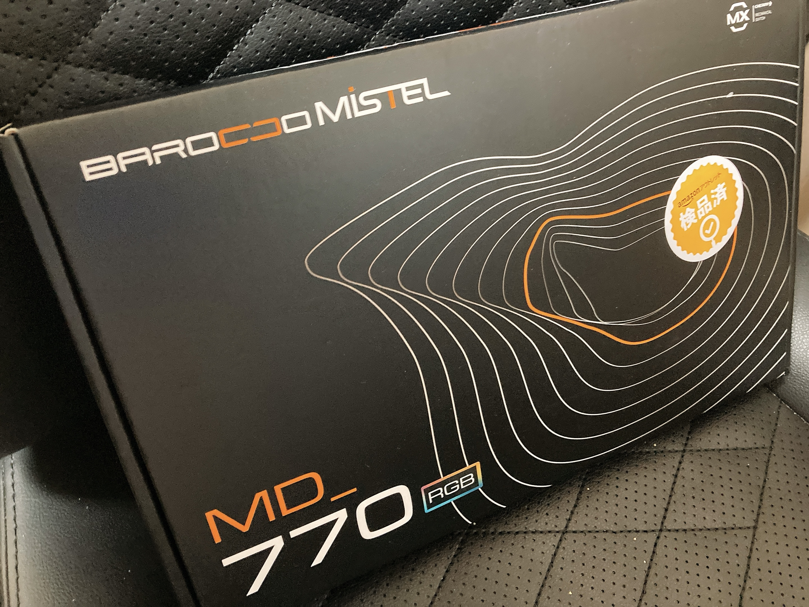
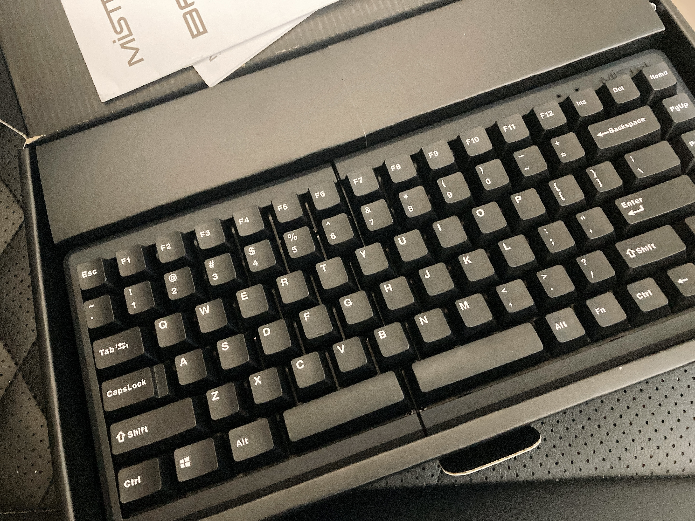
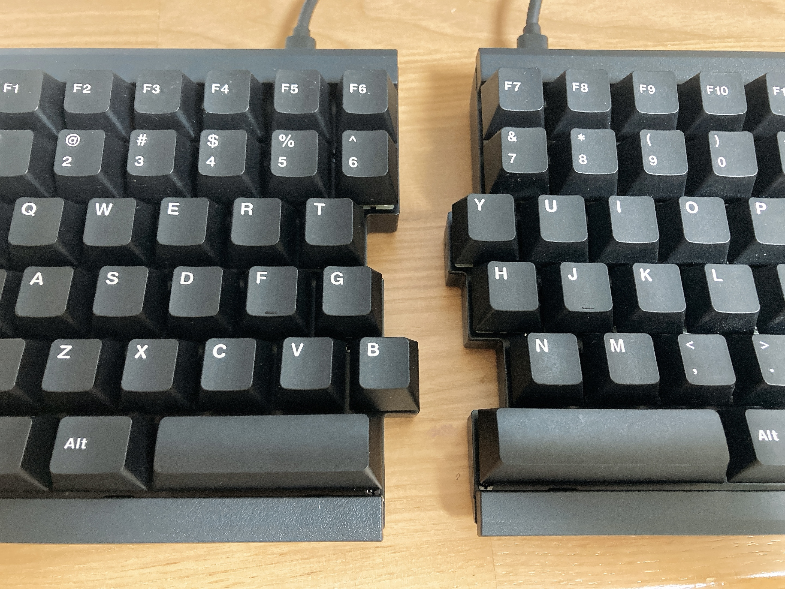

人間卒業計画
悪い友人に唆されて、人間を辞めることになった。
悪い友人というのは、ご察しのとおり以前私にvimを勧めてきた彼のことなわけだが、ニコニコしながらcaps+hjklを使いこなす私を見かねた彼が次に差し出してきたのは「親指シフト」であった。
親指シフトとは？ 詳しい説明は割愛するが、簡単に言うと日本語に特化したニッチな入力方式のことである。かつてはそれ専用のキーボードが存在したりした。左右の親指に独立したキーが必要であり、専用キーボード亡き今はスペースが分割されたキーボードを用いるか、macなら英数キー・かなキーで代用するかなど、一部のファンによる四苦八苦のさまが調べると出てくる。
🦉「親指シフト用のキーボードを自作して、親指シフト覚えたら？」
というのが、友人による（恐ろしい）提案であった。私を人外にする気満々である。そもそも自作キーボードに手を出した時点で一般的環境下での生活能力を失うことになるのは言うまでもない。
しかし、生活能力という話なら、すでにUS配列に手を伸ばして久しい私は今更どう足掻こうが変わらないとも言える。そして、それ以上に何より「親指シフトは慣れると速いらしい」というのが気になる。せっかくなら親指シフトを覚えてしまって、史上最高に入力方式がキモいガチ人外として生きるのも悪くない（？？？）。
ということで、親指シフトの練習をすることになった。改めて言うまでもないが、この日記を読んでいる良い子の皆は絶対こんな真似しないように。
いきなり自作キーボードに手を出すにはあらゆる準備が足りない。真に好ましいキーボードを自作するのはゆくゆくの課題として、まずは親指シフトを練習可能なキーボードを手元に準備しようではないか。秋葉原で見かけたいい感じの分割キーボードが密林アウトレットで割り引かれていたので、お迎えすることにした。

安心と信頼の密林アウトレット。今回はご丁寧に検品済みシールが貼ってある。箱の隅が少し剥がれていたが、中身が無事なら全く問題ない。


ごく普通のキーボードかのような顔をしておいて、箱から出した途端ばっくり2つに分かれるのがなかなか面白い。先代同様、かしゃかしゃ感のたまらない茶軸。まさかこんなに早く代替わりするとは思わんかったよ。
ASMR便乗 pic.twitter.com/ZF894jzaPC
— ₍₍⁽⁽🍳₎₎⁾⁾ (@sal_pipr) February 10, 2022
押したキーだけ光る設定が面白かったので採用。
Karabinerと大格闘の末、なんとか一通りの親指シフト設定が終わった。Karabinerのいない窓でこのキーボードで親指シフトを実現するのは難しそう。需要が読者になさすぎるので詳細は割愛するが、左右のスペースを区別するため、「キーボード側の設定で右スペースをPgDnにリマッピング→Karabiner側で親指シフト関連の処理を挟んだあとスペースに戻す」という謎実装をしている。PgDnなのは、普段全く使わないから衝突しないというだけ。PgDnより使わないキーを思いついた人がいたら教えてほしい。
というわけで、親指シフトを猛練習する毎日が始まった。一通りキー配置がなんとなく頭に入ったものの、全く速度が出せず困り果てているというのが現状。寿司打のお手軽コースで1000円以上損するとかいう散々っぷり。たまにローマ字入力に戻して高級コースでやすやすと儲けているわけだが、事情を知らないと代行か何かにしか見えなくて笑う。
お手軽3,000円コース【普通】で、
— ₍₍⁽⁽🍳₎₎⁾⁾ (@sal_pipr) February 9, 2022
1,020円分 損でした…（速度：1.9key/秒、ミス：11key）
https://t.co/8iihfOi1Ci #寿司打
高級10,000円コース【普通】で、
— ₍₍⁽⁽🍳₎₎⁾⁾ (@sal_pipr) February 9, 2022
★8,200円分 お得でした！（速度：5.7key/秒、ミス：24key）
https://t.co/8iihfO0qKK #寿司打
現状思い当たっている親指シフトの長短を書き並べてみる。
長所
- 指の移動が少ない。qazより左、p;/より右に原則触れなくていい
- 句読点と伸ばし棒が圧倒的に打ちやすい。右中・薬で句読点の打ち分けとかいう理不尽に振り回されないし、寿司打で伸ばし棒が出てくる度に右小指が迷子になる必要がない
- ホームポジションに指を置き続けるのが上手くなる。無駄な動きが減り、中薬小指でのキーの押し分けが上手くなる
短所
- qwertyがわからなくなる。特に、ローマ字に戻った時のtgb, yhnへの人差し指の伸びなさが顕著
- 端のキーが叩けなくなる。tab, backspaceが本当にしんどい。親指シフト時は’にbackspaceを割り当てているものの、英字入力時ですらbackspaceを遠いと思うようになる
- キーの同時押しに慣れると、「英字でshiftとキーを同時押ししたがためにshift判定が入らず記号が入力されない」という場面にたびたび遭遇しめんどくさい。「:w」が高頻度で失敗する
現状、圧倒的に遅い入力速度によって脳内の作文が阻害されるという、なかなかにつらい状況になっている。早く慣れて、ばしばし寿司を捌けるようになりたいわね。